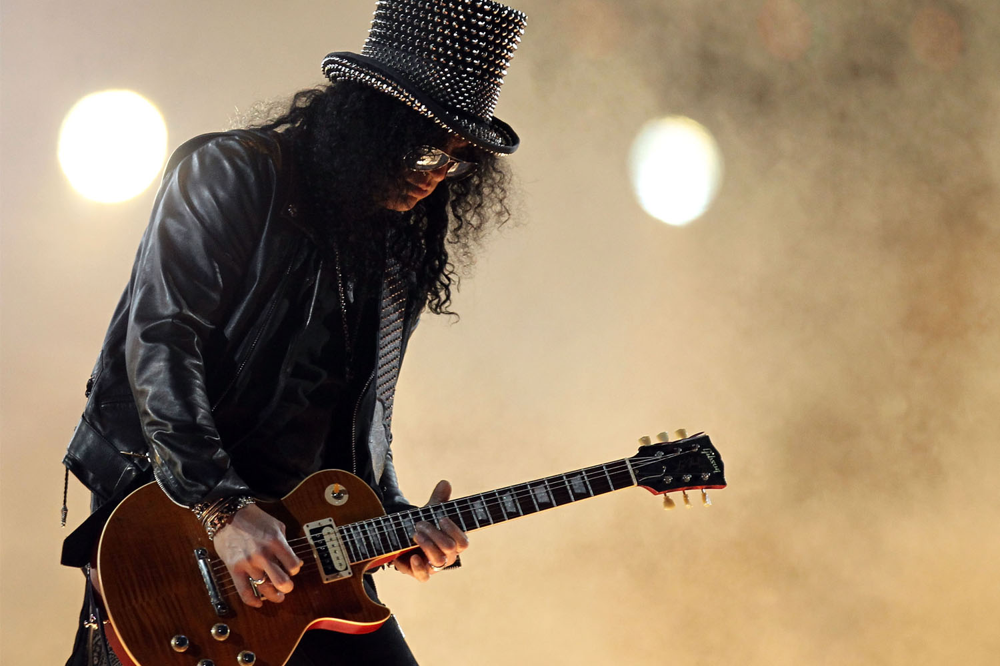
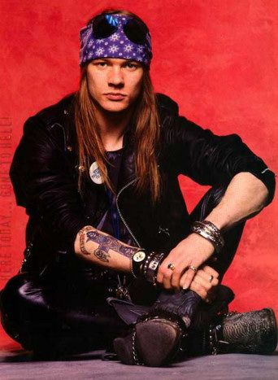
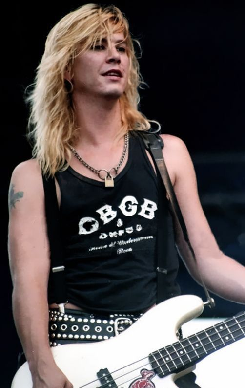
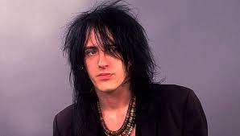
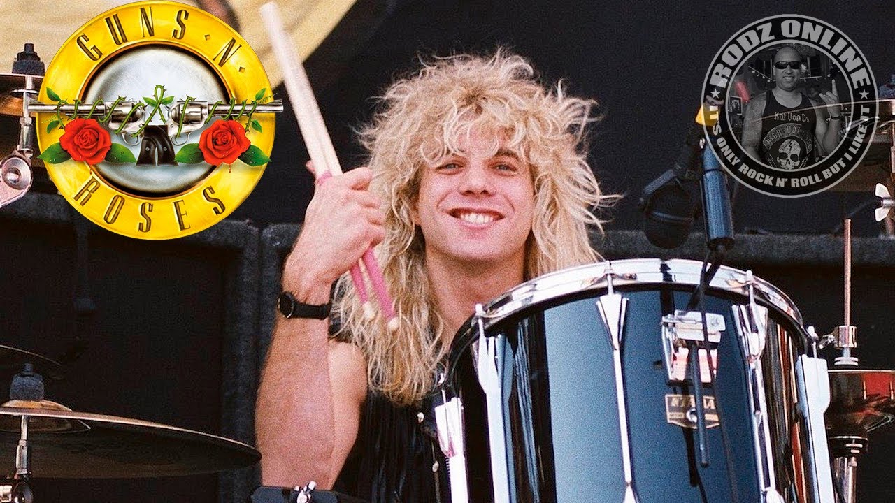

Band Members
Slash
Saul Hudson (born 23 July 1965), better known as Slash, is a British-American musician, songwriter, and record producer. He is best known as the lead guitarist of the American hard rock band Guns N' Roses, with whom he achieved worldwide success in the late 1980s and early 1990s. Slash has received critical acclaim and is considered one of the greatest guitarists in history.
Axl Rose
W. Axl Rose (born William Bruce Rose Jr.; born February 6, 1962) is an American musician, singer, songwriter and record producer. He is best known for being the lead vocalist and lyricist of the hard rock band Guns N' Roses, and has also been the band's sole constant member since their inception in 1985.He has also toured with Australian rock band AC/DC, deputising for Brian Johnson after Johnson's hearing loss in 2016. Rose has been named one of the greatest singers of all time by various media outlets, including Rolling Stone and NME.
Duff McKagan
Michael Andrew "Duff" McKagan (born February 5, 1964), sometimes credited as Duff "Rose" McKagan, is an American multi-instrumentalist, singer, songwriter and author. He played bass for twelve years in the hard rock band Guns N' Roses, with whom he achieved worldwide success in the late 1980s and early 1990s. McKagan rejoined the band in 2016, following their induction into the Rock and Roll Hall of Fame.
Izzy Stradlin
Jeffrey Dean Isbell (born April 8, 1962), best known as Izzy Stradlin, is an American guitarist, singer and songwriter. He was a co-founder and rhythm guitarist of the hard rock band Guns N' Roses, which he left at the height of their fame in 1991, and with whom he recorded four studio albums.
Steven Adler
Steven Adler(born Michael Coletti; January 22, 1965) is an American musician. He is best known as the former drummer and co-songwriter of the hard rock band Guns N' Roses, with whom he achieved worldwide success in the late 1980s. Adler was fired from Guns N' Roses over his heroin addiction in 1990, following which he reformed his pre-Guns N' Roses band Road Crew and briefly joined BulletBoys.